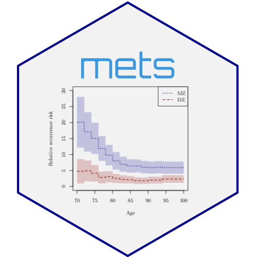

Discrete Time-to-Event Haplotype Analysis
Source:R/discrete-survival-haplo.R
haplo_surv_discrete.RdPerforms cycle-specific logistic regression to estimate haplotype effects on discrete time-to-event data, accounting for phase ambiguity. Given observed genotypes \(G\) and unobserved haplotypes \(H\), the method integrates (mixes out) over the possible haplotype configurations using the conditional probabilities \(P(H|G)\).
Usage
haplo_surv_discrete(
X = NULL,
y = "y",
time.name = "time",
Haplos = NULL,
id = "id",
desnames = NULL,
designfunc = NULL,
beta = NULL,
no.opt = FALSE,
method = "NR",
stderr = TRUE,
designMatrix = NULL,
response = NULL,
idhap = NULL,
design.only = FALSE,
covnames = NULL,
fam = binomial,
weights = NULL,
offsets = NULL,
idhapweights = NULL,
...
)Arguments
- X
Design matrix data frame (must be sorted by
idandtime) containing the ID, time variable, binary response, and covariates.- y
Name of the response variable (binary, 0/1) in
X.- time.name
Name of the time variable in
Xused for sorting and cycle definition.- Haplos
Data frame containing
id,haplo1,haplo2(haplotypes as factors), andp(probability \(P(H|G)\)).- id
Name of the ID variable in
XandHaplos.- desnames
Names of the covariate columns in
Xto be used in the design matrix.- designfunc
Function that computes the design vector given haplotypes \(h=(h_1, h_2)\) and covariates. Must return a vector or matrix compatible with the model.
- beta
Starting values for the optimization (vector of length \(p + k\), where \(p\) is the number of covariate effects and \(k\) is the number of time cycles).
- no.opt
Logical; if TRUE, skips optimization and returns estimates based on the provided
beta(useful for initialization or diagnostics).- method
Optimization method:
"NR"(Newton-Raphson, default) or"nlm".- stderr
Logical; if FALSE, returns only the coefficient estimates.
- designMatrix
Alternative to
XandHaplos: provides the response and design matrix directly (not fully implemented).- response
Alternative to
X: provides the response and design directly (not fully implemented).- idhap
Name of the ID-haplotype variable to specify different haplotypes for different IDs.
- design.only
Logical; if TRUE, returns only the design matrices constructed for the analysis.
- covnames
Names of covariates to extract from the object for regression output.
- fam
Family of the model (default
binomial, currently the only option).- weights
Weights following ID for the GLM component.
- offsets
Offsets following ID for the GLM component.
- idhapweights
Weights following ID-haplotype for the GLM component (Work in Progress).
- ...
Additional arguments passed to the optimizer (
lava::NRornlm).
Value
An object of class "haplosurvd" containing:
- coef
Estimated coefficients (baseline time effects and haplotype/covariate effects).
- se
Standard errors of the coefficients.
- var
Variance-covariance matrix.
- se.robust
Robust standard errors (if available).
- iid
Influence function (IID) decomposition.
- ploglik
Log-likelihood at convergence.
- gradient, hessian
Optimization results.
- Xhap, X, Haplos
Data and design matrices used.
- nid, nidhap
Number of IDs and ID-haplotype combinations.
Details
The survival function is computed by averaging over the possible haplotypes: $$ S(t|x,G) = E[ S(t|x,H) | G ] = \sum_{h \in G} P(h|G) S(t|x,h) $$
The discrete hazard function is modeled using logistic regression: $$ \text{logit}(P(T=t | T \geq t, x, h)) = \alpha_t + x(h) \beta $$ where \(\alpha_t\) are time-specific intercepts (baseline hazards), \(x(h)\) is the regression design constructed from covariates and haplotypes \(h=(h_1, h_2)\), and \(\beta\) are the regression coefficients.
The likelihood is maximized numerically. Standard errors are computed assuming that \(P(H|G)\) is known (i.e., ignoring the uncertainty in haplotype estimation).
The design matrix over possible haplotypes is constructed by merging the covariate
data \(X\) with the haplotype probabilities \(Haplos\) and applying a user-defined
designfunc.
References
Scheike, T. H. (2024). Discrete time survival analysis with haplotype effects. mets package documentation.
Examples
## Some haplotypes of interest
types <- c("DCGCGCTCACG","DTCCGCTGACG","ITCAGTTGACG","ITCCGCTGAGG")
## Some haplotype frequencies for simulations
data(haplo)
hapfreqs <- haplo$hapfreqs
www <- which(hapfreqs$haplotype %in% types)
hapfreqs$freq[www]
#> [1] 0.138387 0.103394 0.048124 0.291273
baseline <- hapfreqs$haplotype[9]
baseline
#> [1] "DTGCGCTCGCG"
## Design function: indicator for presence of any 'types' haplotype
designftypes <- function(x, sm=0) {
hap1 <- x[1]
hap2 <- x[2]
if (sm == 0) y <- 1 * ((hap1 == types) | (hap2 == types))
if (sm == 1) y <- 1 * (hap1 == types) + 1 * (hap2 == types)
return(y)
}
tcoef <- c(-1.93110204, -0.47531630, -0.04118204, -1.57872602, -0.22176426, -0.13836416,
0.88830288, 0.60756224, 0.39802821, 0.32706859)
ghaplos <- haplo$ghaplos
haploX <- haplo$haploX
haploX$time <- haploX$times
Xdes <- model.matrix(~ factor(time), haploX)
colnames(Xdes) <- paste("X", 1:ncol(Xdes), sep="")
X <- dkeep(haploX, ~ id + y + time)
X <- cbind(X, Xdes)
Haplos <- dkeep(ghaplos, ~ id + "haplo*" + p)
desnames <- paste("X", 1:6, sep="") # Six X's related to 6 cycles
out <- haplo_surv_discrete(X=X, y="y", time.name="time",
Haplos=Haplos, desnames=desnames, designfunc=designftypes)
names(out$coef) <- c(desnames, types)
out$coef
#> X1 X2 X3 X4 X5 X6
#> -1.82153345 -0.61608261 -0.17143057 -1.27152045 -0.28635976 -0.19349091
#> DCGCGCTCACG DTCCGCTGACG ITCAGTTGACG ITCCGCTGAGG
#> 0.79753613 0.65747412 0.06119231 0.31666905
summary(out)
#> Estimate Std.Err 2.5% 97.5% P-value
#> X1 -1.82153 0.1619 -2.13892 -1.5041 2.355e-29
#> X2 -0.61608 0.1895 -0.98748 -0.2447 1.149e-03
#> X3 -0.17143 0.1799 -0.52398 0.1811 3.406e-01
#> X4 -1.27152 0.2631 -1.78719 -0.7559 1.346e-06
#> X5 -0.28636 0.2030 -0.68425 0.1115 1.584e-01
#> X6 -0.19349 0.2134 -0.61184 0.2249 3.647e-01
#> DCGCGCTCACG 0.79754 0.1494 0.50465 1.0904 9.445e-08
#> DTCCGCTGACG 0.65747 0.1621 0.33971 0.9752 5.007e-05
#> ITCAGTTGACG 0.06119 0.2145 -0.35931 0.4817 7.755e-01
#> ITCCGCTGAGG 0.31667 0.1361 0.04989 0.5834 1.999e-02